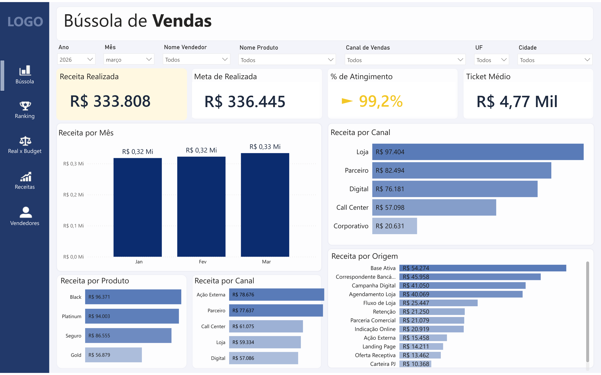
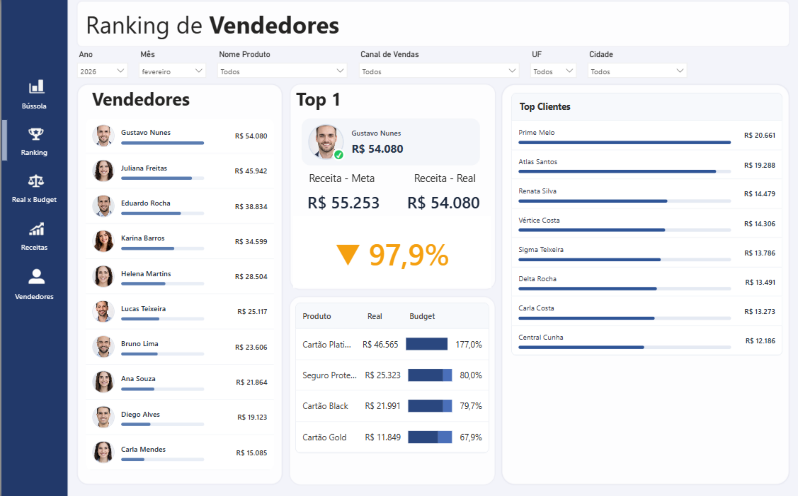
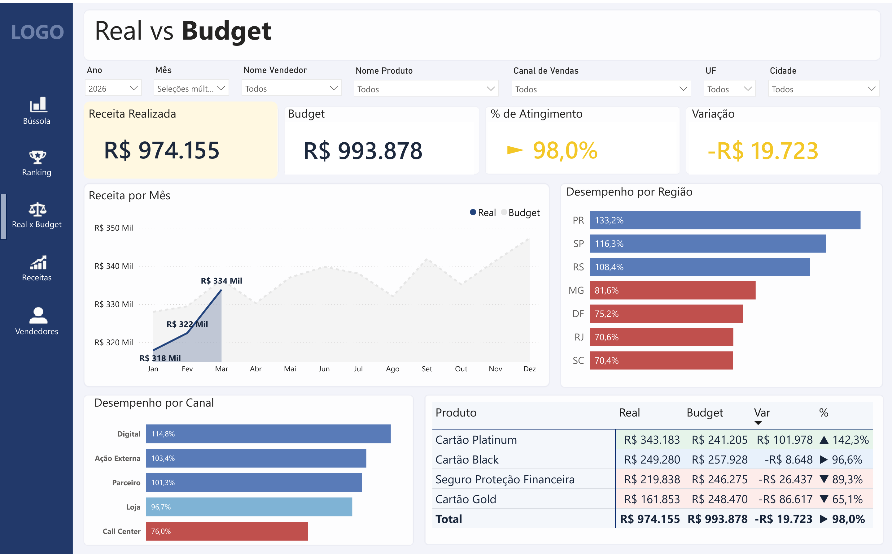

Dashboard Financeiro em Power BI
Este projeto apresenta um dashboard financeiro desenvolvido em Power BI para consolidar a visão gerencial dos resultados da empresa, com foco em DRE, análise de receitas, controle de despesas e acompanhamento de indicadores estratégicos.
A solução foi estruturada para oferecer uma leitura executiva clara e objetiva, permitindo comparar realizado, orçado e ano anterior, identificar desvios com rapidez e apoiar a tomada de decisão com mais segurança.

Contexto e necessidade do negócio
A empresa possuía dados financeiros dispersos em múltiplas planilhas, o que dificultava a consolidação das informações e comprometia a confiabilidade das análises gerenciais. O acompanhamento de resultados era pouco padronizado, com baixa visibilidade sobre desempenho, variações e indicadores-chave.
Nesse cenário, surgiam dificuldades para responder perguntas essenciais para a gestão financeira:
- O resultado está evoluindo de forma positiva ao longo do tempo?
- Quais áreas ou centros de custo estão impactando o desempenho?
- As despesas estão alinhadas com o orçamento?
- A receita está crescendo de forma consistente e sustentável?
Principais desafios
- Estruturar uma DRE gerencial padronizada e confiável para análise
- Garantir consistência e comparabilidade entre realizado, orçamento e ano anterior
- Traduzir dados financeiros complexos em indicadores claros e objetivos
- Proporcionar leitura executiva rápida, sem perder profundidade analítica
- Construir um modelo de dados reutilizável, escalável e de fácil manutenção
Construção da solução
A solução foi desenvolvida com base em três pilares principais: modelagem de dados, padronização da DRE e construção da camada analítica, garantindo consistência, performance e facilidade de uso.
- Modelagem dimensional com separação entre tabelas fato e dimensões
- Estruturação hierárquica da DRE com classificação gerencial
- Desenvolvimento de medidas em DAX para cálculo de indicadores e variações
- Padronização visual entre páginas para garantir consistência na leitura
- Criação de visões analíticas orientadas à tomada de decisão
Por que a solução foi construída desta forma
A solução foi concebida não apenas para apresentar dados, mas para conduzir a leitura gerencial de forma estruturada e intuitiva. Cada página foi desenhada com um objetivo específico: visão executiva dos indicadores, análise da DRE, aprofundamento em receitas e controle detalhado de despesas.
O foco principal foi permitir que o usuário identifique rapidamente tendências, desvios e pontos críticos, reduzindo o tempo de análise e aumentando a segurança na tomada de decisão. A combinação entre clareza visual e profundidade analítica garante uma experiência eficiente tanto para gestores quanto para áreas financeiras.
Principais indicadores analisados
Receita
Análise da evolução da receita, com comparação entre realizado, orçamento e ano anterior, permitindo identificar tendências de crescimento e sazonalidade.
Resultado
Visão consolidada da DRE, com foco em indicadores como EBITDA, lucro líquido e margens, evidenciando a performance operacional da empresa.
Despesas
Monitoramento das principais linhas de custo, com análise por centro de custo e identificação de desvios em relação ao planejado.
Variações
Comparação entre realizado, orçamento e ano anterior, destacando impactos positivos e negativos para apoiar decisões mais assertivas.
Telas do Dashboard e Estrutura de Análise
Cada tela foi desenvolvida com um objetivo específico, organizando a análise financeira de forma progressiva — da visão executiva até o detalhamento de receitas e despesas.
Tela 1 — Visão KPI
Esta tela apresenta a visão executiva consolidada do desempenho financeiro, destacando indicadores-chave como receita, resultado, EBITDA e lucro líquido. O objetivo é permitir uma leitura rápida da situação geral da empresa, facilitando a identificação de tendências e pontos de atenção.
Tela 2 — Análise de Resultado (DRE)

Clique para ampliarNesta tela, a análise se aprofunda na estrutura da DRE, permitindo acompanhar a formação do resultado de ponta a ponta. É possível visualizar receitas, custos, despesas e margens, além de comparar realizado, orçamento e ano anterior para identificar variações e seus impactos.
Tela 3 — Análise de Receitas

Clique para ampliarEsta tela é dedicada à análise de receitas, permitindo acompanhar a evolução ao longo do tempo e comparar valores realizados com o orçamento e o ano anterior. A visão facilita a identificação de tendências, sazonalidades e possíveis desvios no desempenho comercial.
Tela 4 — Análise de Despesas

Clique para ampliarEsta tela foca na análise detalhada das despesas, permitindo avaliar os principais centros de custo e identificar desvios em relação ao orçamento. A estrutura facilita o controle financeiro e apoia decisões voltadas à eficiência operacional e redução de custos.
Ganhos com a conclusão do trabalho
- Redução significativa do esforço manual na consolidação e fechamento financeiro
- Maior visibilidade sobre desempenho, variações e pontos críticos do negócio
- Agilidade na análise gerencial, com acesso rápido às principais informações
- Padronização da leitura da DRE e dos indicadores financeiros
- Aumento da confiabilidade dos dados para suporte à tomada de decisão
- Estrutura escalável que permite evolução contínua da solução analítica
Quer uma solução assim na sua empresa?
Posso estruturar dashboards com foco em clareza, performance e tomada de decisão.
Falar comigo